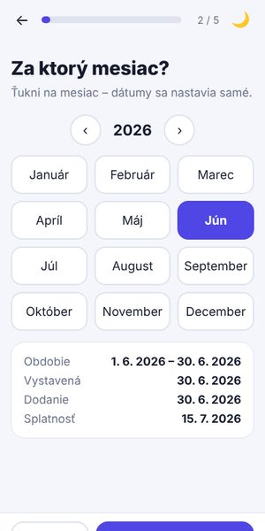
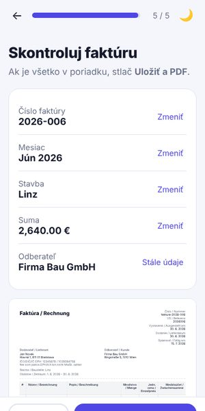

1 🧭 Sprievodca krok za krokom
Na každej obrazovke len jedna otázka: číslo → mesiac → stavba → suma → kontrola. Veľké tlačidlá „Ďalej“ a ukazovateľ, koľko krokov ostáva.
👍 Najmenej sa dá pomýliť – nič netreba hľadať.
Vyskúšať →